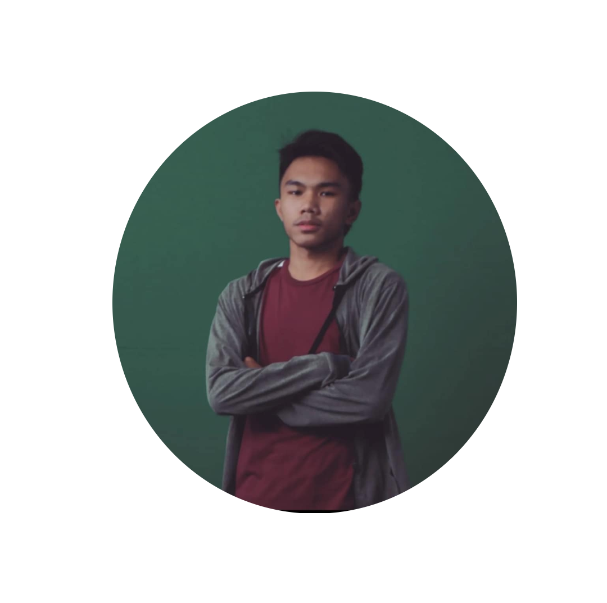

Computer Science Intern

VON CAMPANA
Computer Science Intern
Hello! I’m Von Campana, a passionate computer science student with a strong interest in software development and technology innovation. Currently pursuing my degree, I am dedicated to honing my skills in programming, problem-solving, and system design. Throughout my academic journey, I have gained experience in various programming languages, including Python, Java, and JavaScript. I enjoy tackling challenging projects that allow me to apply my knowledge and creativity to develop efficient and effective solutions. I am particularly interested in areas such as web development, artificial intelligence, and data analysis. I believe in the power of technology to transform ideas into reality and am always eager to learn about emerging trends and tools in the tech industry. In addition to my studies, I enjoy collaborating with fellow students on group projects and participating in hackathons. These experiences have not only enhanced my technical skills but also taught me the importance of teamwork and effective communication. Outside of coding, I enjoy exploring new technologies, reading tech blogs, and contributing to open-source projects. I am excited about the opportunities ahead and look forward to making a meaningful impact in the field of computer science. Thank you for visiting my portfolio! Feel free to connect with me to discuss potential collaborations or share ideas.